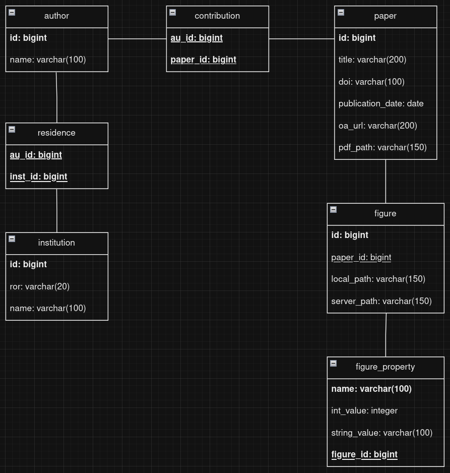

Database Information
Latest Database File
/page
Entity Results Diagram

Database Code
The code to create and populate the database is in the GitHub repo.
Creating:
https://github.com/DevinBayly/vis-sieve/blob/main/database/create_database.py
Filling:
https://github.com/DevinBayly/vis-sieve/blob/main/openalex_code/hear_me_ROR_script.py
Note that filling the database right now is incredibly slow, I think from stripping PDFs and figures.
Local File Structure
- content
- [paper id]
- pdf file (paper_id.pdf)
- figures
- [figures indexed by integer 00-99] (.png/.jpg/etc.)
- [paper id]
Notes:
Add paper properties, like topics
Note, rn a paper is connected to an institution only by author. If an author worked at the uofa then went somewhere else, all their works would be counted under both uofa and the other place. Is that an issue?
affiliation is a author attribute that has some possible time associated with it, https://docs.openalex.org/api-entities/authors/author-object,
digging into this
https://api.openalex.org/authors?filter=affiliations.institution.ror:03m2x1q45+00hx57361 would be someone with both princeton and UA affiliation https://openalex.org/authors/A5072674162 for example. This person was at u of a in 2020 and princeton plasma in 2017
look at the results with these two queries to see if there’s the overlap we were afraid of
then we can look for their works in 2020, assumption is that they would also show up in the institutional pass for 2020 from u of arizona.
then if we look for works in 2017 we will see the ones from princeton,
no overlap

or are we talking about a case where an user queries the database for the works of a particular author? problem statement is u of a work counts being correct vs
suggestion is that we auto populate a field on paper that just borrows the ROR that is provided when the publication by year process is going
Database Subset and SQL Practice

It's not a super big file so I’ll just put it here, note there are no figures yet so no need to worry about file structure.
-
Code to generate database
```sql CREATE TABLE author ( id BIGINT PRIMARY KEY, name VARCHAR(100) NOT NULL );
CREATE TABLE institution ( id BIGINT PRIMARY KEY, roi VARCHAR(20) NOT NULL, name VARCHAR(100) NOT NULL );
CREATE TABLE residence ( au_id BIGINT, inst_id BIGINT, PRIMARY KEY (au_id, inst_id), FOREIGN KEY (au_id) REFERENCES author(id), FOREIGN KEY (inst_id) REFERENCES institution(id) );
CREATE TABLE paper ( id BIGINT PRIMARY KEY, title VARCHAR(200) NOT NULL, doi VARCHAR(100), publication_date DATE );
CREATE TABLE contribution ( au_id BIGINT, paper_id BIGINT, PRIMARY KEY (au_id, paper_id), FOREIGN KEY (au_id) REFERENCES author(id), FOREIGN KEY (paper_id) REFERENCES paper(id) );
CREATE TABLE figure ( id INTEGER PRIMARY KEY, paper_id BIGINT, local_path VARCHAR(100), server_path VARCHAR(100), FOREIGN KEY (paper_id) REFERENCES paper(id)
);CREATE TABLE figure_property ( name VARCHAR(100), int_value INTEGER, string_value VARCHAR(100), figure_id INTEGER, FOREIGN KEY (figure_id) REFERENCES figure(id), PRIMARY KEY (name, figure_id) ); ```
If you want to use ChatGPT, I’d recommend something along the lines of
``` Below is the code to generate an SQL database: [All the code above] END OF SQL CODE
Write a query to [find the number of authors] ```
But feel free to see what works for you
Some information to note:
- Each block is called a table, each variable is called a column
- Common data types
- Bigint is an int64 (some openalex ids were bigger than the int32 cap)
- Date is a date that's always formatted like “yyyy-mm-dd”
- Varchar is short for variable (number of) characters and can have between 0 and the number of characters listed
- Keys
- Items in bold are primary keys, meaning every entry must have this property and there cannot be duplicates of it. For example, author has a primary key id, meaning every author in the table has an id, and no two authors share an id. For paper, institution, and author, this is the id specified by openalex.
- Note that a paper, an author, and an institution may have the same id, open alex gets around this by appending an “W” (work), “A”, or “I” before the id.
- If a table has multiple columns in bold, that means those columns form a composite primary key, meaning none of the composite columns can be NULL, and every entry must be a unique combination of the columns. In the example above, each contribution entry must have both an author and a paper, and no two entries can share the same combination of author and paper. (001, 333) and (001, 444) would be okay, (001, 333) and (002, 333) would be okay, but (001, 333) and (001, 333) would not be okay.
- Columns that are underlined are called foreign keys, meaning they reference the primary key of another table. For example, contribution.au_id references author.id.
- Items in bold are primary keys, meaning every entry must have this property and there cannot be duplicates of it. For example, author has a primary key id, meaning every author in the table has an id, and no two authors share an id. For paper, institution, and author, this is the id specified by openalex.
- The lines (less important)
- The lines between each table don't actually represent anything in the database, just concepts. Lines terminating in the double bars represent “only one” while the “|<” means one or more, and “<” means any number. For example, in the above diagram, each author can have one or more contribution, but each contribution can only reference one author.
Getting started with DuckDB
Id recommend using it with python so it'll integrate with any other work we do, but that's of course up to you, there's documentation on their website if you wanna do it a different way. It can be installed pretty easily with pip.
pip install duckdb
Next, in python, you'll want to import it. I don't think there's a common import name but I've just been calling it db
import duckdb as db
Then, any time you want to use the database, you'll open it, run the queries followed by fetching, then close it.
con = db.connect('publications.db')
# Gets the number of papers
con.execute("""
SELECT COUNT(*)
FROM paper
""")
print(con.fetchall())
# Gets all unique institution names
con.execute("""
SELECT DISTINCT name
FROM institution
""")
print(con.fetchall())
con.close()
Theres a lot of good resources for info on SQL, one I like is https://www.w3schools.com/sql
Queries to try
Here’s a couple of questions to try to answer by querying the database
-
How many institutions are in the database?
sql SELECT COUNT(*) FROM institution -
What is the name of the institution with
id=20089843?sql SELECT name FROM institution WHERE id = 20089843 -
What are all the institutions that have “Arizona” in the name? (Hint: use
LIKE)sql SELECT name FROM institution WHERE name LIKE '%Arizona%' -
Who are three authors from “Princeton University”?
sql SELECT author.name FROM author JOIN residence ON author.id = residence.au_id JOIN institution ON residence.inst_id = institution.id WHERE institution.name = 'Princeton University' LIMIT 3Note that indentation and new lines are not important, just the words. You could put that all on one line and it would work.
-
What are the titles of all the papers coauthored by people affiliated with “Princeton University”
sql SELECT DISTINCT paper.title FROM paper JOIN contribution ON paper.id = contribution.paper_id JOIN author ON contribution.au_id = author.id JOIN residence ON author.id = residence.au_id JOIN institution ON residence.inst_id = institution.id WHERE institution.name = 'Princeton University' -
How many papers are there that have no authors affiliated with the “University of Arizona”
Incorrect from ChatGPT:
sql SELECT COUNT(DISTINCT p.id) FROM paper p LEFT JOIN contribution c ON p.id = c.paper_id LEFT JOIN residence r ON c.au_id = r.au_id LEFT JOIN institution i ON r.inst_id = i.id WHERE i.name IS NULL OR i.name != 'University of Arizona';This will get all the papers that have anyone unaffiliated with the UofA, rather than everyone unaffiliated.
After another prompt reminding it of its goal
Correct from ChatGPT:
sql SELECT COUNT(*) FROM paper WHERE id NOT IN ( SELECT DISTINCT paper_id FROM contribution JOIN residence ON contribution.au_id = residence.au_id JOIN institution ON residence.inst_id = institution.id WHERE institution.name = 'University of Arizona' );It’s weird that the answer is 27 (you can verify by manually looking through the db) as the whole point of this query is to find papers affiliated with the U of A. Looking into it, the issue is with the database creation and not adding all of an author's affiliations, the query works correctly. I’ll patch this but at least for the DB file above, this makes for a good exercise.